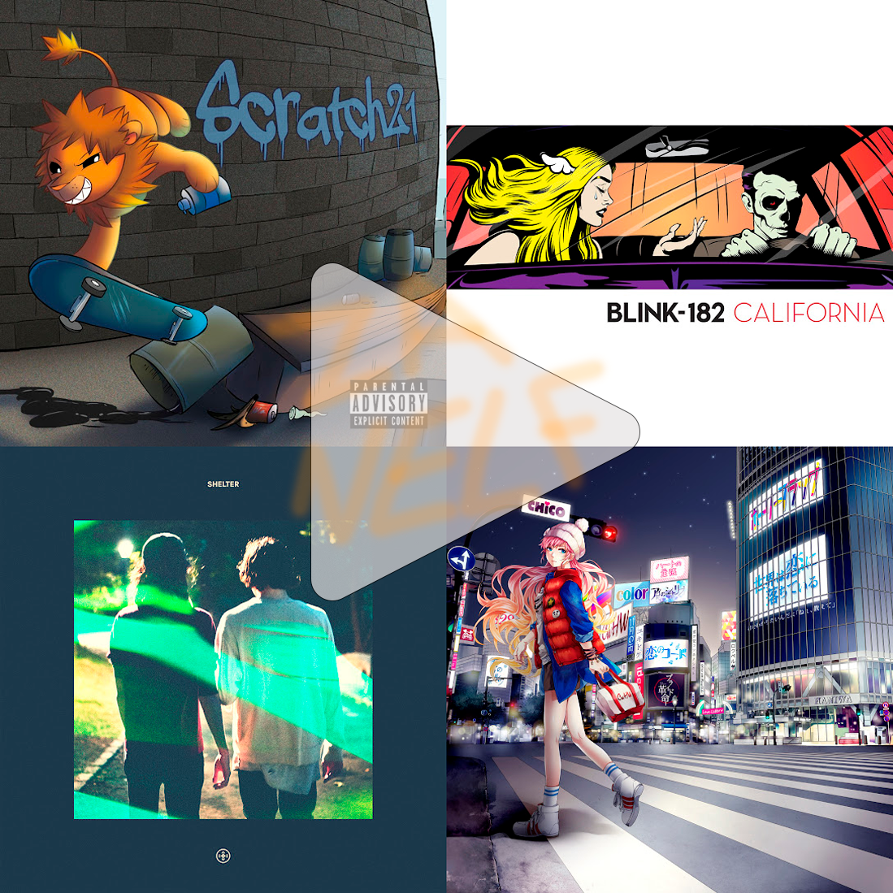

esta es una pagina de prueba donde poder pasarte la lista de reproduccion junto con la historia
el color de fondo es negro porque de momento es un wueveo eso de cambiar el color de todo el texto
even if it has already been do it
esta es la lista de reproduccion completa en el orden original en el que fue concebido. recomiendo usar esta lista y simplemente ir avanzando por las entradas, pero si te sientes como un sociopata ve avanzando una por una, si sigo aprendiendo a usar html las entradas tendras links hacia infomacion adicional.
la historia se ubica en el mundo de tinieblas, eso significa.
en el caso particular de los hombres lobos, estos son una raza milenaria de criaturas encargadas por la
pachamama a proteger la naturaleza, esta raza se llama en su conjunto como los garou.
dentro de este gran clan los garou estan separados en 3 grupos en funcion de donde nacieron, estos son
los hominidos, aquellos
que su progenitora es humano. Los lupus, aquellos bastagos cuya progenitora es un
lobo, y por ultimo los metis aquellos bastardos cuya sangre tan pura les
causa mutaciones, esto producto de que sus padres ambos sean garous.
tambien cabe rescatar que la sociedad garou esta separada en distintos clanes, estos clanes tienden a llevarse mal entre si pero se soportan, tambien debido a que se encuentran en peligro de extinsion se suelen juntar en terrenos comunes llamados bounds.
finalmente, en este mundo tambien existen todo tipo de criaturas las cuales reptan en las sombras y amenazan tanto a los garou como a los humanos.
esto es todo lo que necesitas entender para enfrentarte a la historia aca escrita, aparte de eso solo queda decir que esto es un bosquejo de una historia que apenas recuerdo